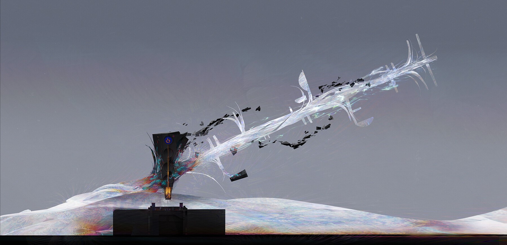

"Shame. Guilt. Fear. We all bear them. Gather your regrets, purge them as best you can. Let your enemies feel the
weight of your burdens."
"I have it," I say, feeling Henriette's gaze piercing through me. The Exo holds her back. Inside that head of hers I know she's screaming for me not to do it.
But I have to. It's is the kind of thing one does for love. The burden one takes on.
I refuse to look back at her. I can't let those eyes stop me. "What you want. The Exo doesn't have it anymore. I do," I tell the man with the drone.
Tears are streaming down Henriette's face now. She's shaking her head. I still can't look. I know the feelings that would flow through me if I did.
"Yuki, no! Please don—" Henriette cries, only to be interrupted by the man. "Shh, darling. You'd best quiet down. Let me and your friend here finish our little transaction."
I've rarely ever seen her tears. She's not normally one to make them. Usually I'm the one who needs comforting. Needs my eyes dried. And she's always the one to do it.
Fearless Henriette. Well, Hen, today it's my turn. Today I save you.
The man scowls, his voice grows sharper. "Hand it over then. I won't ask twice." I nod, and I try to stay calm. I try to use it to lure him in. A false sense of security.
"I'm just going to reach into my bag now,"
I tell him. He shakes his head. "Not so fast, friend." He takes a few steps, stopping an inch away from me, the barrel of his cannon in my face.
"Let's keep any potential wrong moves to a minimum here, please." Then he nods for me to go ahead.
I'm absolutely relieved. He took the bait. And now he'll pay the price. I can't go just yet, though. I need just… one more glance. One last look at those eyes of hers. I can't help it.
It's too late now, anyway. My hand is in the bag and I've already pulled the pin. No turning back. My eyes dart to the side, to hers. They lock, one last time.
I'm at peace. I let her know with a smile. I hope she finds hers.
I swear she's in my head, hearing me say goodb—

Library ishtar-collective